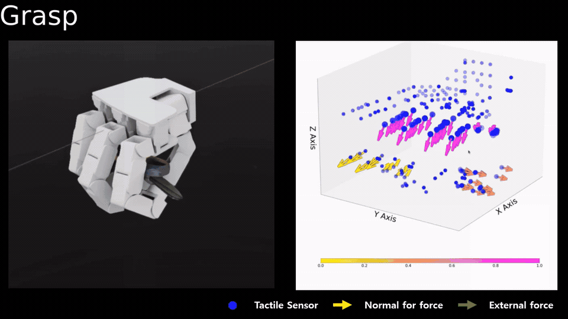
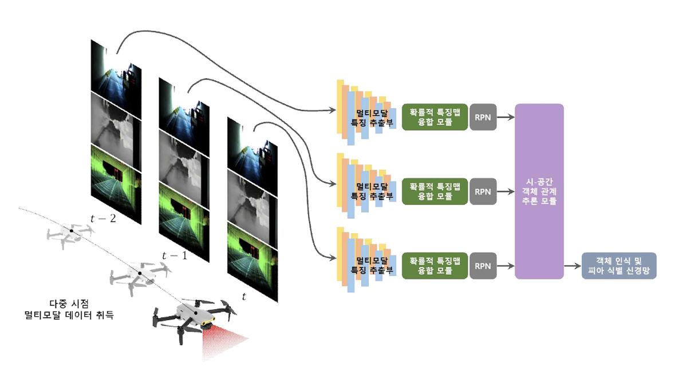
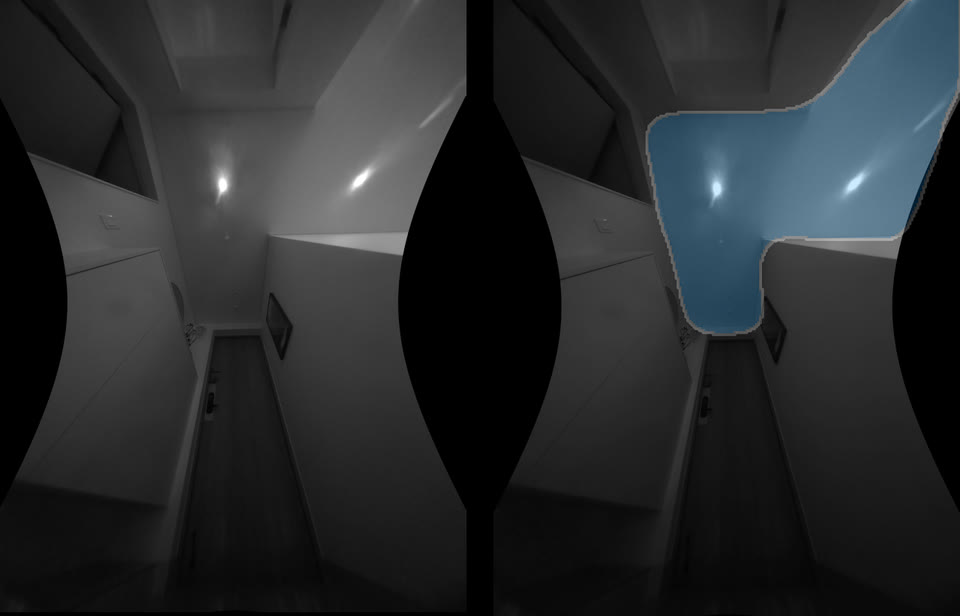

Projects
Research and development projects across robotics, perception, and machine learning.
-

Jul. 2026 – Present
Development of an Intelligent Dual-Arm Robot
HD Hyundai Robotics
AI & Software Developer
Robot learning with VLA/WAM models; VR/glove teleoperation and hand retargeting; simulation and multimodal demonstration data pipelines.
Company demonstration at FIX 2026. Video: HD Hyundai Robotics, via NEWSIS. · Source
-

May 2025 – Feb. 2026
Development of Tactile Intelligence in Robotic Hands Based on Tactile Data Learning for Manipulating Irregular Multiple Types of Objects
Ministry of Trade, Industry and Energy (MOTIE), South Korea
AI Developer
Multimodal Action Policy for Contact-Rich Tasks using Vision and F/T Sensing
Simulation excerpt: GIST AI Lab project demo. · Source
-

Sep. 2023 – Feb. 2026
Development of a Micro Intelligent Drone for Autonomous Missions in Communication/GPS-denied Environments
Institute of Civil-Military Technology Cooperation (ICMTC), South Korea
Project Member · Software Developer
RGB-IR object detection and a multimodal RGB, IR, and LiDAR database captured from drone views.
Project overview: GIST AI Lab. · Source
-

Apr. 2023 – Dec. 2024
Development of a Situational Awareness System for Preventing Collisions and Accidents of Autonomous Ships
Ministry of Trade, Industry and Energy (MOTIE), South Korea
Project Member · Software Dev. Leader
Multi-camera maritime object detection and tracking, training dataset creation, and integration into autonomous ship systems.
Platform photo and perception footage: research presentation.
-

Apr. 2020 – Nov. 2024
Development of Swarm USV Autonomous Navigation Algorithm
Agency for Defense Development (ADD), South Korea
Project Leader · AI & Software Dev. Leader
Maritime object detection and intention prediction for swarm situational awareness, integrated into multiple USVs.
Platform footage: SBS News (Oct. 10, 2024). Perception footage: research presentation. · Source
-

Mar. 2022 – Dec. 2022
Ceiling Layout Estimation for Indoor Environments
LG, South Korea
Project Member · AI & Software Dev. Leader
Ceiling segmentation and dataset construction for robust floor plan generation under occlusion.
Ceiling segmentation example: GIST AI Lab. · Source
-

Apr. 2019 – Mar. 2020
Robotic IKEA Furniture Assembly from Assembly Manuals
Ministry of Science and ICT (MSIT), South Korea
Project Member · AI & Software Developer
Assembly-part instance segmentation and workflow visualization for robot assembly from IKEA manuals.
Video
-
Mar. 2018 – Dec. 2019
Artificial Intelligence-Based Algorithm Development for Sleep Analysis and Diagnosis of Sleep Apnea Syndromes
Gwangju Institute of Science and Technology (GIST), South Korea
Project Member · AI Developer
Construction of a Polysomnography Database, Development of a Sleep Stage Classification Model, and Development of a Sleep Apnea Detection Model
-
Mar. 2019 – Aug. 2019
Deep Learning-Based Sound Event Detection in Game Environments for Haptic Feedback Generation
Dongwoon Anatech, South Korea
Project Member · AI & Software Developer
Construction of a Sound Event Detection Dataset and Development of a Sound Event Detection Model in Game Environments